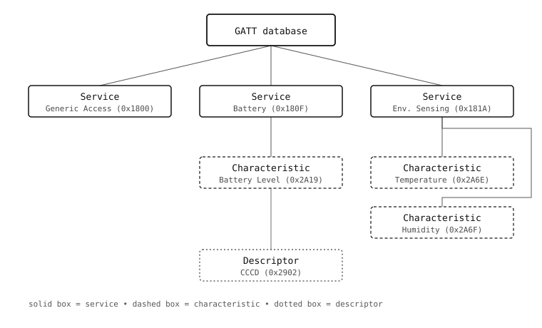

11.6. 服務與特徵¶
一旦 GAP 讓兩個裝置進入開放連線，位於其上層的 Generic Attribute Profile（GATT，通用屬性設定檔）就必須賦予流經該連線的位元組意義。BLE 在此的選擇相當不尋常。TCP 公開的是原始位元組串流，並把如何自行設計訊框格式的工作留給應用程式，而 GATT 公開的則是一個 小型的鍵／值資料庫，由一方代管，另一方則對其進行讀取、寫入或訂閱。
那個資料庫正是應用程式設計者在 BLE 上花最多時間思考的對象。相機向手機發布什麼、它在遠端感測器上監看什麼、藍牙鍵盤如何告訴其主機按下了哪個按鍵——這些全都是某處某個 GATT 資料庫中的特徵值。
11.6.1. 兩條角色軸線，而非一條¶
一個常見的混淆來源：peripheral（周邊端）／central（中央端）與 server（伺服器）／client（用戶端）是 兩條彼此獨立的軸線，並非同義詞。
Peripheral（周邊端）與 central（中央端）是 GAP 角色，於連線時設定。周邊端進行廣播並被連線；中央端進行掃描並發起連線。這在連結建立的那一刻就確定下來，且不會改變。
Server（伺服器）與 client（用戶端）是 GATT 角色，依每次特徵操作而設定。伺服器代管該特徵；用戶端則對其進行讀取、寫入或訂閱。
這兩條軸線在規範中是解耦的。周邊端 通常 是伺服器（心率帶發布它的讀數），而中央端 通常 是用戶端（手機讀取這些讀數），但 BLE 允許任意組合——周邊端可以在它剛連上的中央端上探索某個特徵，或者單一連線可以同時在兩端代管服務。
大多數相機應用都遵循傳統的搭配（周邊端＋伺服器，或中央端＋用戶端），因此在描述傳統情況時，本節其餘部分會把它們視為一條軸線。當這項區別有意義時，則會明確寫出兩個術語。
11.6.2. 資料庫內部¶
GATT 資料庫是一棵樹。葉節點承載實際的位元組。分支則把相關的葉節點分組為對人類有意義的單位。

一個 GATT 資料庫。服務將特徵分組；特徵承載應用程式的位元組；描述子承載有關該特徵的中介資料。¶
節點共有三種：
service（服務）是相關值的邏輯群組。Bluetooth SIG 為常見使用情境發布了標準服務定義——Battery Service 用於電池電量、Environmental Sensing 用於溫度／濕度／壓力、Heart Rate 用於心率監測器——如此一來，手機上的通用應用程式便能辨識出它從未見過的服務。應用程式也可以自由定義 SIG 尚未標準化的事物所需的自訂服務。
characteristic（特徵）是服務內一個具名的值。Battery 服務只有單一特徵——Battery Level，一個位元組的百分比。Environmental Sensing 則為溫度、濕度、壓力等各有獨立的特徵。特徵是 GATT 操作的單位——你讀取一個特徵、寫入一個特徵、訂閱一個特徵。
descriptor（描述子）是附加於特徵的中介資料。有些描述子是標準化的——Client Characteristic Configuration Descriptor（CCCD）便是著名的一個，因為對它寫入正是用戶端告訴伺服器「就此特徵向我傳送通知」的方式。其他描述子則由使用者自行定義，承載諸如呈現格式或擴充屬性之類的內容。
GATT 伺服器（通常是周邊端）在啟動時宣告其資料庫一次，且資料庫在執行期間不會改變。GATT 用戶端（通常是中央端）則在連線後 探索 資料庫中的內容——走訪整棵樹，讀取它所找到的服務的 UUID，接著讀取每個服務內的特徵。
11.6.3. UUID¶
每個服務、特徵與描述子都有一個 UUID（Universally Unique IDentifier，全域唯一識別碼），用以標識 它是哪一種事物。UUID 有三種寬度：
16 位元。 保留給 Bluetooth SIG 所定義的標準。Battery Service 是
0x180F。Battery Level（一個特徵）是0x2A19。完整清單發布於 Bluetooth SIG 的指派號碼網站 https://www.bluetooth.com/specifications/assigned-numbers/。32 位元。 一種鮮少使用的折衷選擇。
128 位元。 其他所有人都使用的——廠商或應用程式隨機產生一個，並將其用於自己的自訂服務或特徵。定義自身協定的相機就屬於這一類。
bluetooth.UUID 類別接受這三種寬度中的任一種:
import bluetooth
BATTERY_SERVICE = bluetooth.UUID(0x180F)
CUSTOM_SERVICE = bluetooth.UUID("12345678-1234-5678-9abc-def012345678")
16 位元 UUID 可編碼成一個很小的廣播酬載，這也是當存在標準服務時偏好使用標準服務的原因之一——廣播 0x180D（Heart Rate）的心率帶只需兩個位元組；而自訂 UUID 則需十六個。對於不需要標準互通性的應用程式而言，產生一個 128 位元 UUID 才是正確答案。
11.6.4. SIG 標準化服務能為你帶來什麼¶
使用標準服務的理由很直接：現有應用程式已經知道如何與它溝通。一個廣播 Heart Rate 服務（0x180D）並公開 Heart Rate Measurement 特徵（0x2A37）的裝置，無須任何人撰寫新程式碼，就能與全世界每一個健身應用程式搭配運作。而一個用自訂 UUID 重新實作相同資料的裝置，則需要自己的配套應用程式與自己的協定文件。
這些標準確實有代價。每個特徵內的位元組配置都是規定好的——SIG 決定 Heart Rate Measurement 是一個單位元組的旗標欄位，後接 8 位元或 16 位元的心率值，並可選擇性地後接 R-R 間隔——而符合規範的裝置必須遵循這些配置。自訂服務則不受此約束。
對相機而言務實的答案是：當你所擁有的資料類型已存在對應的標準服務時（Battery Service、Environmental Sensing）就使用標準服務，並為應用程式特有的任何事物以 128 位元 UUID 定義一個自訂服務。
11.6.5. 伺服器端與用戶端物件¶
對於相同的概念性建構單元（服務、特徵、描述子），每個 GATT 函式庫都會公開兩組平行的物件：
伺服器端 物件——周邊端宣告自己所代管的內容。在
aioble中為：aioble.Service、aioble.Characteristic、aioble.Descriptor。這些物件在廣播開始前建構，並透過aioble.register_services()註冊。用戶端 物件——中央端在連線後於對端所探索到的內容。在
aioble中為：aioble.ClientService、aioble.ClientCharacteristic、aioble.ClientDescriptor。連線後可透過aioble.DeviceConnection.service()／services()走訪這些物件。